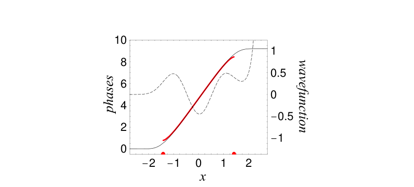
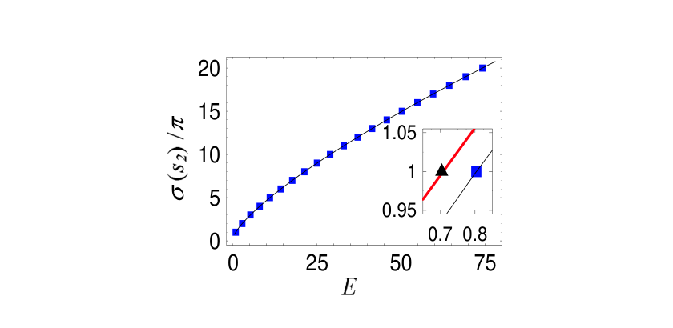
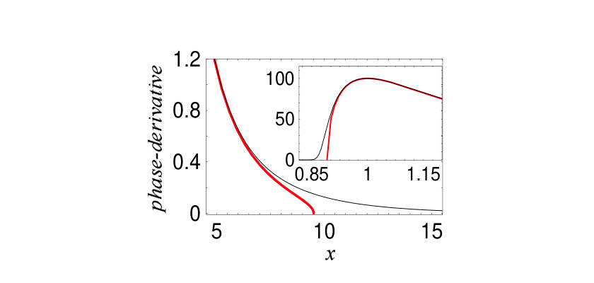
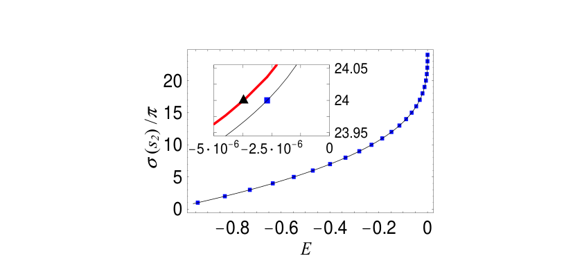

비가해 퍼텐셜의 정확한 양자화: 준고전 근사 너머의 양자 위상의 역할
비가해 퍼텐셜의 정확한 양자화: 준고전 근사 너머의 양자 위상의 역할
A. Matzkin
Laboratoire de Spectrométrie physique (CNRS Unité 5588), Université Joseph-Fourier Grenoble-I, BP 87, 38402 Saint-Martin, France
초록
준고전 양자화는 조화 진동자와 같은 이른바 가해(solvable) 퍼텐셜에 대해서만 정확하다. 비가해(nonsolvable) 경우에는 \(h\)의 급수로 주어지는 준고전 위상이 더 좋거나 덜 좋은 근사 결과를 산출하며, 결국 전개의 점근적 성질로 인해 발산한다. 이러한 단점을 우회하기 위해 양자 위상이 유도된다. 이는 비가해 퍼텐셜의 정확한 양자화를 달성하며, 가장 잘 발산하기 직전의 준고전 전개를 국소적으로 근사하면서 양자 파동함수를 얻을 수 있게 한다. 적절한 계산 비용으로 실용적 계산을 구현할 수 있는 반복 절차도 제시된다. 이 이론은 준고전 접근의 한계가 최근 부각된 두 가지 예—냉원자 충돌과 비섭동 영역에서의 비조화 진동자—에 대해 설명된다.
PACS numbers: 03.65.Sq 03.65.Ca 03.65.Ge 02.70.-c
가해(integrable) 계의 준고전 처리는 행성 운동에 대한 보어의 원자 모형과 정칙 운동의 양자화에 관한 아인슈타인의 고전 논문 [1]까지 거슬러 올라갈 수 있는데, 잘 정립되고 존경받는 주제로 여겨진다. 위상이 고전 작용으로 양자화되어야 한다는 것은 어떤 표준 교과서에서도 찾아볼 수 있는 사실이다. 그러나 WKB 이론은 종종 문제의 물리를 포착하지 못할 만큼 거칠고 양적으로 매우 부정확한 근사 결과를 보여준다. 실제로 WKB 이론은 제한된 수의 퍼텐셜—이른바 가해(solvable) 퍼텐셜—에 대해서만 정확한 양자화를 달성하는데, 이는 한 줌의 가해 퍼텐셜로, 조화 진동자나 모스 진동자, 원심 쿨롱 문제 등을 포함한다. 지난 십 년 동안 양자역학에 초대칭(SUSY) 방법을 적용함으로써 이 목록은 SUSY WKB [2]를 사용하여 양자화 가능한 몇몇 퍼텐셜만큼 확장되었다. 그러나 가해 경우에서조차 WKB 파동함수는 부정확하며, 특히 위상이 폭발하는 회귀점 부근에서 그러하고, 무발산 WKB 방식의 일관된 구성은 여전히 활발히 연구되는 주제이다 [3]. 더 일반적인 비가해 경우, WKB 양자화는 들뜬 상태의 에너지 준위를 계산하는 데 유용한 근사 결과를 종종 산출해 왔지만, 최근 몇몇 단점도 지적되었다. 예를 들어 WKB 이론에서 사용되는 퍼텐셜의 고전적 금지 영역에서의 위상 손실은 원자 군집 계산에서 사용되는 퍼텐셜에서는 제대로 고려되지 않으며 [4]; 차가운 원자 충돌에서는 WKB 양자화가 매우 들뜬 상태에 대해 깨진다 [5]; 비조화 퍼텐셜에서는 WKB의 실패가 양자장 이론에서 분자 물리에 이르는 응용을 목표로 양자 기법의 수치적으로 관여하는 광범위한 발전을 자극해 왔다 [6, 7].
우리는 이 작업에서 정확한 양자 위상을 고려함으로써 이러한 단점이 해결될 수 있음을 보인다. 양자 위상은 준고전 위상과 매우 가까운 관계를 갖지만, 비가해 퍼텐셜에서는 준고전 접근 너머로 가야 한다. 실제로 준고전 근사의 실패는 근본적인 고전 동역학에 의해 부과된 한계에 있다. 에너지 \(E\)의 일차원 보존계를 다루도록 하자. 본 연구에서 주된 관심사가 되는 그러한 계의 WKB 파동함수는 [8]에 의해 주어진 블록으로 만들어진다.
\[\psi_{\text{WKB}}(x, E) = A(x, E) \exp[iS(x, E)/\hbar] \tag{1}\]
여기서 위상 함수 \(S(x, E)\)는 고전 작용이며 \(A^2(x, E) = (\partial_x S)^{-1}\)는 고전 확률 진폭이다. WKB 양자화 조건은 다음과 같이 주어진다.
\[S(t_2, E) - S(t_1, E) = \left(n + \frac{\mu}{4}\right)\pi\hbar, \tag{2}\]
여기서 \(t_{1,2}\)는 회귀점이고, \(\mu\)는 마슬로프 지표이며 (일차원계에서는 일반적으로 2), \(n\)은 준위 정수이다. 점근 급수에 의한 근사를 개선하기 위하여, 일반적으로 [9]에서는 \(h\)의 더 높은 차수까지 진행함으로써 그 다음 차수의 양자 보정을 포함한 준고전 위상을 정의해야 한다. 그러나 이러한 전개는 점근적 성질이 있으므로, 비록 더 높은 차수까지 가면 결과의 정확도를 향상시킬 수 있더라도 어느 시점에서는 급수가 일반적으로 발산한다 [9]. 더욱이 회귀점에서 진폭의 발산은 매 차수마다 더 악화되며, 위상 적분을 계산하기 위해서는 더 높은 차수의 정규화 기법이 필요하다.
이것이 양자 위상 \(\sigma(x, E)\)가 슈뢰딩거 방정식
\[\hbar^2 \partial_x^2 y(x) + p^2(x) y(x) = 0, \tag{3}\]
을 적절히 변환함으로써 처음부터 정의되어야 하는 이유이며, 발산하는 준고전 전개를 암묵적으로 합산하는 것이다. 여기서 \(p(x)\)는 고전 운동량이다. 류빌–그린 형식의 변환 [10]은 다음과 같이 쓰면 얻어진다.
\[y(x) = (\partial_x \xi(x))^{-1/2}\, w(\xi), \tag{4}\]
따라서 \(\xi(x)\)는 ’위상’으로 나타나고 앞 인자는 식 (1)에서처럼 진폭으로 나타난다. \(w(\xi)\)가 다음 방정식
\[\hbar^2 \partial_\xi^2 w(\xi) + R(\xi) w(\xi) = 0, \tag{5}\]
을 만족한다고 가정하자. 여기서 미지정 함수 \(R(\xi)\)의 선택이 \(w\)의 선택을 결정한다. 그러면 \(\xi\)는
\[R(\xi)\,(\partial_x \xi)^2 - p^2(x) + \frac{\hbar^2}{2}\,\langle \xi; x \rangle = 0, \tag{6}\]
을 만족하게 된다. 여기서 \(\langle \xi; x \rangle \equiv \partial_x^3 \xi / \partial_x \xi - \tfrac{3}{2}(\partial_x^2 \xi / \partial_x \xi)^2\)는 슈바르츠 도함수를 나타낸다. 따라서 \(\xi\)의 선택은 운반 함수 \(w\)의 선택에 의존한다는 것을 알 수 있다 (또는 동등하게 \(R(\xi)\)의 선택), 그리고 그러면 \(w\)의 선택과 부과되어야 할 경계 조건의 선택이 세 번째 차수의 비선형 방정식 (6)으로 이어진다. 이것은 양자역학에서 위상 함수가 겪는 모호성에 대한 설명이며, 이 사실 때문에 컷오프와 한편으로는 주어진 양자 위상 함수를 컷오프할 유일한 방법이 없으며, 다른 한편으로는 연속성 조건 \(\alpha(x, E) = (\partial_x \xi)^{-1/2}\) (\(a\)는 준고전 경우에서처럼)을 만족하는 진폭 함수를 가지지 않는다는 사실이다.
형식적으로 \(\xi(x)\)는 \(R\)의 특정 선택과 무관하게 \(h\)의 점근 급수로 전개될 수 있다. 그럼에도 불구하고 식 (6)에서 분명한 것은, \(\hbar\)의 1차 차수에서 \(\xi(x) \sim S(x)\)가 \(R(\xi) = \pm 1\)에 대응하는 유일한 선택이며, 식 (5)에 의해 원형 또는 지수형 운반 함수로 이어진다는 것이다. 그러므로 양자 위상의 정의에서 지불해야 할 대가는 \(\hbar\) 전개가 이러한 함수—WKB 근사에서와 같은 함수—를 기반으로 한다는 것은 회귀점에서 반드시 발산한다는 점이다. 그러나 식 (6)의 정확한 해는 이러한 단점을 보이지 않으며, 양자 위상을 정의할 가능성을 가리킨다. 식 (6)에서 \(R(\xi) = \pm 1\)로 두자. 식 (3)의 해를 실수로 하기 위해, 또한 \(w\)를 원형 함수 \(y(x)\)로 두는 것이 가능하다. 그러면 \(y(x)\)는 \(\alpha(x)\sin\sigma(x)\)에 비례하게 되며, \(\sigma\)는 \(R = \pm 1\)일 때 위상 \(\xi\)를 나타낸다. \(p(x)\)가 구간 \(]s_1, s_2[\) (일반적으로 \(]-\infty, +\infty[\) 또는 \([0, +\infty[\) 가 방사 문제에 대해)에 걸쳐 있다고 하자. [11]에서 \(\alpha\)가 양의 정칙(positive definite) 이차식임을 보일 수 있는데, \(x \to s_{i=1,2} \to \infty\)일 때 \(\alpha\)가 \(\to \infty\)로 동작한다. 그러므로 \(\sigma(s_1) = 0\)로 두면 양자화 조건은 다음과 같이 된다.
\[\sigma(s_2, E) = (n+1)\pi, \tag{7}\]
여기서 \(n\)은 식 (2)에서와 같이 준위 정수이다. 식 (7)은 정확하며 \(\sigma\)에 부과된 경계 조건과 무관하게 성립한다.
계산 목적상, 식 (6)은 풀기 까다롭다. 원자 단위계를 사용하고 \(R(\xi) = 1\)로 가정하면 (지금부터) 다음과 같이 다시 쓸 수 있다.
\[M(x, E) = \partial_x \left[ \sigma(x, E) + \frac{i}{2} \ln(\partial_x \sigma) \right], \tag{8}\]
식 (6)은 다음의 복소수 일차 비선형 미분 방정식으로 이어진다.
\[\partial_x M = i\left(p^2(x) - M^2(x)\right) \equiv \mathcal{F}(M(x), x), \tag{9}\]
여기서 \(\mathcal{F}\)는 함수형으로 취해진 가운뎃항을 나타낸다. 우리의 전략은 식 (9)의 방정식 \(M\)을 풀고, 실수 부분이 \(\partial_x \sigma\)를 줄 것인데, 이는 위상 \(\sigma\)를 얻기 위해 수치적으로 적분되며, 양자 파동함수와 전체 위상 \(\sigma(s_2, E)\)를 산출한다. 그렇게 하면 함수 \(M_0(x)\)의 1차 함수 (1차 함수 \(M_0\))에 대한 식 (9)의 해 주위에서 \(M\)을 전개함으로써 식 (9)의 방정식 \(M\)의 선형화를 다음과 같이 하자.
\[\partial_x M_{q+1} = \mathcal{F}(M_q(x), x) + \left.\frac{\delta \mathcal{F}}{\delta M}\right|_{M_q} (M_{q+1}(x) - M_q(x)), \tag{10}\]
\(q = 0\)이고 \(\delta\)는 함수형 도함수를 나타낸다. 식 (10)은 선형 일차 상미분 방정식으로, 직접 풀 수 있다. \(\mathcal{F}\)가 선형화되었기 때문에 식 (10)은 식 (9)와 동등하지 않으며, 따라서 \(M_1\)이라는 첨자가 붙는다. 수렴은 절차를 반복하여 식 (10)을 \(q = 1\), 그 다음 \(q = 2\) 등으로 풀고 더 나은 근사 \(M_2\)를 얻음으로써 달성된다. 이 반복적 선형화 절차는 준선형화 방법(QLM)으로 알려져 있는데, 비선형 미분 방정식의 해를 선형 방정식을 반복적으로 풀어 대체한다. 이는 30년 전 벨만(Bellman)과 칼라바(Kalaba) [12]에 의해 선형 계획법의 맥락에서 도입되었으나, 양자역학에서 다루는 함수 유형에 대한 QLM의 확장은 매우 최근 [13]에 이루어졌다. 특히, 이 방법을 강력하게 만드는 이차 수렴 성질이 여전히 성립한다. 실제로 보통 5~6회의 반복이면 높은 정밀도(예: 20자리 십진수 이상)로 해를 얻기에 충분하다.
식 (10)을 반복적으로 풀려면 두 가지 요소가 필요하다: 첫째 시행 함수 \(M_0(x)\), 둘째 경계 조건이다. \(M_q(x_b)\)는 처음부터 설정되어야 하는데, 이는 각 \(q\)에 대해 동일해야 하기 때문이다. \(M_0\)의 선택은 사실 중요하지 않은데, 충분히 잘 작용하는 어떤 시행 함수, 즉 회귀점 사이에서 \(|p(x)|\)로, \(x < t_1\)일 때 \(i|p(x)|\)로 (각각 \(x > t_2\)일 때 \(-i|p(x)|\)로), 영역들 사이의 매끄러운 전이를 가지면서 작용하는 함수는 동일한 수렴된 답으로 이어질 것이기 때문이다. 우아한 해는 회귀점에서 발산하지 않는 1차 준고전 표현을 결정하는 것이며, 이는 식 (5)에서 \(R(\xi)\)를 적절히 선택하고 \(\xi_{0\pm 1}\)의 항으로 \(\sigma\)를 표현함으로써 이루어지지만, 우리는 여기서 이 작업을 추구하지 않을 것이다 [14]. 결정적인 것은 경계 조건의 선택인데, 이는 해의 거동을 결정하기 때문이다. 우리는 여기서 \(\sigma(x)\)가 무한한 \(h\) 전개로 쓰여진다면, \(h \to 0\) 한계를 취할 때 고전 작용 \(S(x)\)를 산출하는 유일한 경계 조건이 존재한다는 것을 보였던 이전 연구 [11]에 의지한다. 다른 경계 조건의 경우 이 전개는 WKB 파동함수의 진동을 표시한다. 최적 경계 조건의 존재는 가해 퍼텐셜의 맥락에서 잘 알려져 있는데, 여기서는 분석적 해(예: 조화 진동자에 대한 포물선 원기둥 함수, 원심 쿨롱 경우의 휘태커 함수 [15])의 사용을 통해 비진동 양자 위상을 명시적으로 구성할 수 있다. 그러나 비가해 퍼텐셜에 대해서는 특수 함수에 기반한 절차가 존재하지 않는 반면, [11]에서 사용된 \(h\) 전개는 형식적 성격을 가진다. 양자 위상이 \(h\) 전개가 수렴한다면 그것이 가질 거동을 갖도록 보장하기 위해 [16], 우리는 여기서 가장 단순한 해, 즉 고전적으로 허용된 영역에서 적절한 점 \(x_b\)를 선택하여 표준 (\(R(\xi) = 1\)) 준고전 전개가 사용될 수 있고 \(h\)의 가능한 한 가장 높은 차수까지 가는 방법을 택한다. 원리상 사용 가능한 더 좋은 해가 있지만, 그것들은

그림 1: 왼쪽 눈금: \(E = 5\) (\(a.u.\) 단위)에서 비조화 진동자에 대한 양자 위상 \(\sigma(x)\) (실선 검정 곡선)을 회귀점 (x축 위의 반원) 사이에 그려진 고전 작용 \(S(x)\) (두꺼운 회색/빨간색 곡선)와 함께 보였다. 우리는 \(S(t_1) = \pi/4\)로 두었음에 유의하라. 이 \(\pi/4\) 상수는 표준 WKB 분석 [8]로부터 친숙하지만, \(R(\xi) = \xi\)로 두어 식 (6)으로부터 얻어진 회귀점에서 발산하지 않는 준고전 위상이 \(x \gg t_1\)일 때 \(\sigma_{\rm scl}(x) \simeq S(x)/\hbar + \pi/4\)로 거동한다는 것 (그러나 \(\sigma_{\rm scl}(t_1) = \pi/6\))이 [10, 14]에서 엄격히 증명될 수도 있다. 오른쪽 눈금: 연관된 파동함수 \(\alpha \sin\sigma\). \(E\)가 고유값이 아니므로 이 부적절한 파동함수는 산란 이론에서와 같이 단위 에너지당 정규화되지 않는다.
이러한 더 좋은 해들은 \(\sigma\)의 거동도 양자역학적 양도 그것들의 사용에 의해 영향을 받지 않는 한 불필요하다.
우리는 이제 두 가지 구체적인 예에서 양자 위상의 성질을 설명하고 상술할 것이다. 첫 번째 예는 분자 진동에서 양자장 이론과 상전이까지 매우 다양한 현상의 연구에 사용되는 비조화 진동자에 관한 것이다. 이는 큰 수치적 기저 [7, 18] 또는 섬세한 재합산 기법 [6]을 요구하는 고유값과 파동함수를 계산하기 위한 다양한 방식들을 만들어 왔다. 준고전 근사의 실패는 가장 낮은 준위들에 대해 중요할 뿐만 아니라 (예: 대칭 퍼텐셜 \(x^{2m}\)에 대해 WKB 양자화는 \(m\)의 함수로서 에너지의 잘못된 거동을 준다) 더 들뜬 상태에 대해서도 지속되는데, 이는 일반적으로 실수 직선에서 떨어진 복소 회귀점들의 존재 [19]에 기인한다고 여겨져 왔다. 그러나 실수 양자 위상의 구성에 기반한 본 방식에서 복소 평면은 직접적인 어떤 역할도 하지 않는다. 그림 1은 비조화 퍼텐셜 \(x^2 + 2x^4\)를 가진 해밀토니안에 대한 양자 위상 \(\sigma(x, E)\)를 고전 작용과 함께 보여준다. 퍼텐셜의 대칭성을 고려하여, 우리는 \(x_b = 0\)을 취하였고 \(h^{14}\) 차수까지 준고전 전개를 수행함으로써 \(M_0(x_b)\)의 값을 고정하였다. 우리는 또한 같은 그림에 연관된 파동함수를 그렸다. 그것은 오른쪽 회귀점을 넘어 발산하는데, 우리가 자발적으로

그림 2: 양자 위상을 양자화함으로써 얻어진 (\(a.u.\)) 비조화 진동자의 에너지 준위. 매끄러운 곡선은 \(E\)의 함수로서 \(\sigma(s_2, E)/\pi\)를 나타내며, 상자들은 각 시점에서 양자값이 정수 \(n + 1\)과 동일한 시점을 표시하고, 바닥 상태부터 시작하여 에너지와 상자들의 첫 20개 준위 \(n = 0 - 19\)가 그려져 있다. 삽입은 바닥 상태에서 줌함: 두꺼운 회색/빨간색 선은 준고전 양자화 곡선 \((S(t_2, E) - S(t_1, E))/\pi + 1/2\)를 보여준다 (\(h\) 전개가 그 차수를 넘어가면 발산하기 때문에), 그리고 삼각형은 준고전적으로 양자화된 준위인데, 이는 더 많은 정확한 준위와 비교했을 때 10% 이상 차이가 난다.
선택했기 때문이다 (여기서는 \(E\)가 2번째와 3번째 준위 사이의 고유값이 아니다). 이때 속박 상태들은 다음과 같은 방식으로 양자화 조건 (7)을 적용함으로써 발견된다: 전체 위상 \(\sigma(s_2, E)\)를 (\(s_2 = \infty\)가 다른 에너지 값에 대해 결정됨에 따라 (에너지 격자가 더 또는 덜 성기게 될 수 있으며, 요구되는 수치 정밀도에 따라). 그런 다음 점들은 \(E\)의 함수로서 곡선 \(\sigma(s_2, E)\)를 산출하기 위해 보간되며, 그림 2에서 볼 수 있듯이 식 (7)로부터 결정된 바닥 상태와 [7]의 정확한 양자역학적 계산에서 출판된 결과와 비교된 비조화 진동자의 첫 35개 상태를 비교한다. Table III.
두 번째 예시는 강한 단거리 반발력과 장거리 인력 꼬리를 가진 퍼텐셜 우물을 포함한다. 이 종류의 퍼텐셜은 차가운 원자 충돌 연구에서 관심 대상이며, 이는 광회합 분광법 [5]의 발전에 의해 자극되어 왔다. WKB 근사는 들뜬 상태에 대해 깨지는데, 이는 고전적으로 금지된 영역의 큰 영역 [20]을 가지는 거의 분리된 상태에 대해서이다. 우리는 비례된 형태의 다음 레너드–존스 (LJ) 퍼텐셜을 사용한다.
\[p^2(x) = B\left[E - \left(\frac{1}{x^{12}} - \frac{2}{x^6}\right)\right] \tag{11}\]

그림 3: 가장 들뜬 속박 상태에 대한 차가운 충돌 (단위 \(a.u.\))에서 차가운 원자 충돌의 12-6 LJ 퍼텐셜 특성에 대한 양자 위상의 도함수 \(\partial_x \sigma\) (실선 검정 곡선)와 고전 작용 \(\partial_x S = p\) (두꺼운 회색/빨간색 곡선)의 도함수. 이러한 양들은 외부 회귀점 \(t_2 \approx 9.5\) 근처의 영역에서 표시되어 있다. 삽입은 안쪽 회귀점 \(t_1 \approx 0.9\) 근처의 영역을 보여준다 (매우 다른 척도임에 유의).
여기서 \(B\)는 ‘강도’ 매개변수이다. 이 퍼텐셜은 \(B = 10^4\)일 때 [20, 21]과 그 안의 참고문헌에서 자주 벤치마크로 사용되어 왔으며, 24개 상태를 지지한다고 알려져 있다. WKB 양자화 조건 (2)는 임계값 가까이의 마지막 속박 상태에 대해 큰 오류로 에너지를 준다. 그림 3은 마지막 속박 상태가 임계값 아래 있는 양자 위상의 도함수 \(\partial_x \sigma(x, E)\)를 고전 운동량 \(\partial_x S(x, E)\)와 비교한다. \(x_b\)는 퍼텐셜 최솟값의 오른쪽으로 잡혀 있고 \(h\) 전개는 12차까지 수행되었다. 두 곡선은 고전적으로 허용된 영역에서 거의 구분할 수 없으므로, 우리는 회귀점 근처의 영역에 초점을 두었다. 양자 곡선이 고전적으로 금지된 영역으로 크게 침투하여 외부 회귀점 너머로 잘 확장된다는 점에 유의하라. 이는 장거리 인력 꼬리를 가진 퍼텐셜에 있는 들뜬 상태에 대해 전형적이며, 준고전 근사의 붕괴를 다스리는 근본적 이유로 볼 수 있다. 양자화는 위 식 (7)에 의해 지정된 절차에 따라 진행되며, 결과 곡선은 그림 4에 표시되어 있고 24개 준위의 양자화된 에너지는 정확한 양자역학적 계산 [20]의 값을 정확하게 재현한다. 특히, 산란 길이의 결정에 들어가는 마지막 속박 준위의 위치, 즉 보스–아인슈타인 응축의 생성에서 결정적인 매개변수이다.
요약하면 우리는 정확한 양자화 에너지뿐만 아니라 파동함수도 제공하면서 준고전 근사를 넘어가는 양자 위상을 사용해 왔다. 우리는 또한 위상 방정식의 국소 준고전 전개로부터 얻어진 경계 조건과 위상 방정식의 선형화에 기반한 양자 위상을 결정하는 수치적 절차를 제시했다.

그림 4: 양자화 \(\sigma(s_2, E)\) (실선 곡선)에 의해 얻어진 12-6 LJ 퍼텐셜의 정확한 에너지 준위 (\(a.u.\) 단위 상자), 비례화. 삽입은 임계값 (\(E = 0\)) 아래의 마지막 상태에서 줌하며 또한 약 40% 너무 낮은 WKB 예측 (삼각형)도 보여준다.
그리고 비가해 퍼텐셜의 두 가지 경우에서 그 접근을 설명했다.
[1] N. Bohr, Phil. Mag. 26, 1 (1913). A. Einstein, Vehr. Deutsch. Phys. Ges. Berlin 19, 82 (1917).
[2] M. Hruska, W.Y. Keung and U. Sukhatme, Phys. Rev. A 55, 3345 (1997).
[3] T. Hyouguchi, R. Seto, M. Ueda and S. Adachi, Ann. Phys. 312, 177 (2004).
[4] H. Friedrich and J. Trost, Phys. Rev. A 54, 1136 (1996).
[5] C. Boisseau, E. Audouard and J. Vigue, Europhys. Lett. 41, 349 (1998).
[6] T. Hatsuda, T. Kunihiro and T. Tanaka, Phys. Rev. Lett. 78, 3229 (1997).
[7] H. Meissner and E. O. Steinborn, Phys. Rev. A 56, 1189(1997).
[8] M. Brack and R. Bhaduri, Semiclassical Physics (Addison Wesley, Reading, 1997).
[9] C. M. Bender, K. Olaussen and P. S. Wang, Phys. Rev. D 16, 1740 (1977). A. Voros, Ann. I Fourier 43, 1509 (1993).
[10] S. Yu. Slavyanov, Asymptotic Solutions of the One-Dimensional Schrodinger Equation (AMS, Providence (RI), 1996).
[11] A. Matzkin, J. Phys. A 34, 7833 (2001).
[12] R. E. Bellman and R. Kalaba, Quasilinearization and nonlinear boundary-value problems (Elsevier, New York, 1965).
[13] V. B. Mandelzweig, J. Math. Phys. 40, 6266 (1999). R. Krivec and V. B. Mandelzweig, Comput. Phys. Comm. 152, 165 (2003).
[14] A. Matzkin, in preparation.
[15] M. J. Seaton, Rep. Prog. Phys. 46, 167 (1983).
[16] As put by Arnold (in Mathematical Methods of Classical Mechanics (Springer, Berlin, 1989)), the divergence of the series means that ‘we are looking for an object that does not exist’ as an expansion.
[17] J. P. Boyd, Acta Appl. Math. 56, 1 (1999).
[18] M. H. Macfarlane, Ann. Phys. 271, 159 (1999).
[19] L. V. Chebotarev, Ann. Phys. 273, 114 (1999).
[20] H. Friedrich and J. Trost, Phys. Rep. 397, 359 (2004).
[21] C. Boisseau, E. Audouard, J. Vigue and V. V. Flambaum, Eur. Phys. J. D 12, 199 (2000).